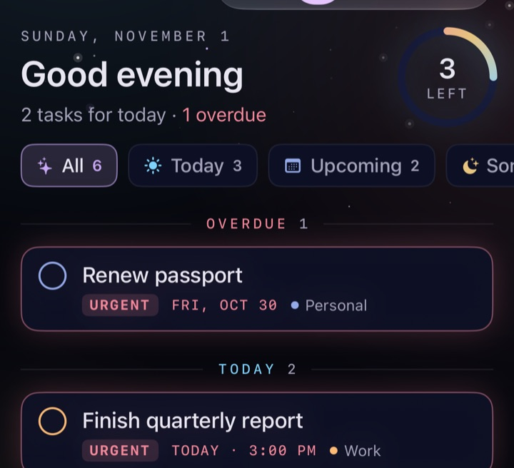
Your day at a glance
A greeting, a one-line summary and a progress ring. Filter by All, Today, Upcoming, Someday, Urgent or a list.
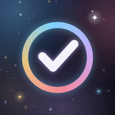
Free beta · iPhone, iPad and MacA calm, private to-do app with a night-sky look.
It shows what matters today, keeps you from losing anything by accident, and uses Apple Intelligence only where it saves you typing.
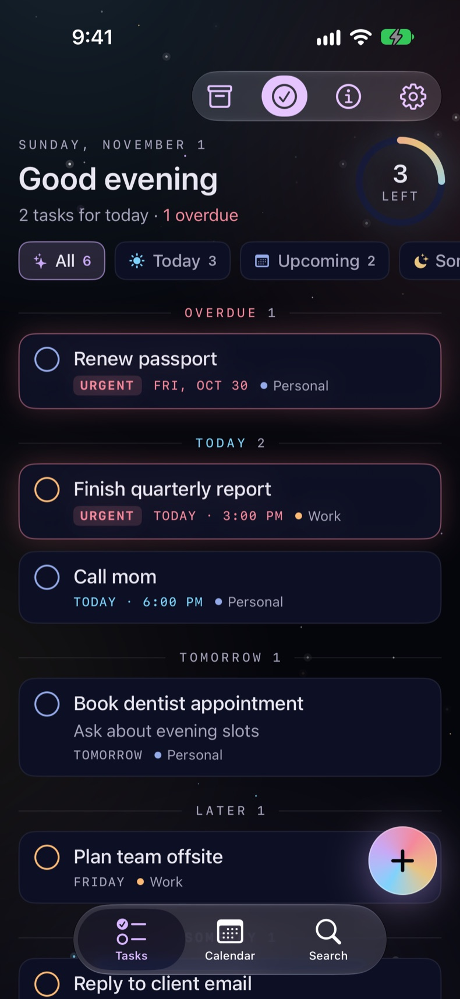

A greeting, a one-line summary and a progress ring. Filter by All, Today, Upcoming, Someday, Urgent or a list.
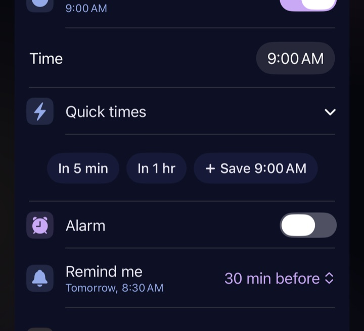
A notification at the due time or earlier, with Complete and Snooze buttons. Alarm rings full screen, even on silent, with a tone you pick for each task.
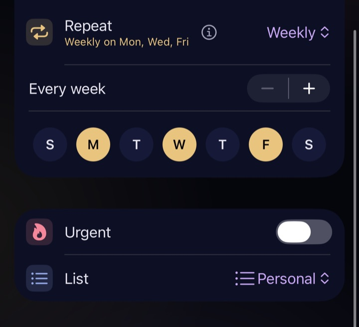
Daily, weekly on the days you pick, or monthly. Complete one and the next appears.
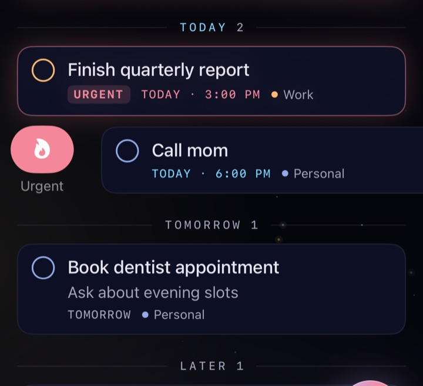
Swipe right or type !. An urgent task with no date counts as today's until it's done.
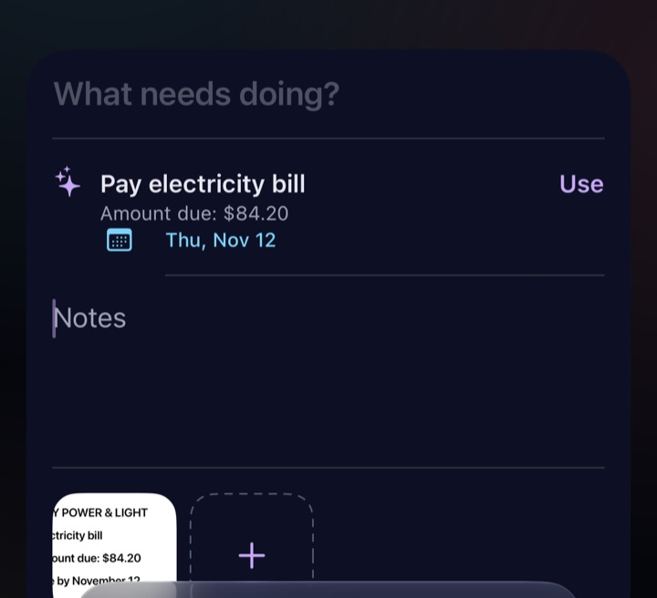
Add photos, PDFs and files. Apple Intelligence suggests a title: a to-do for a bill, or "Photo of a cardinal" for a photo.
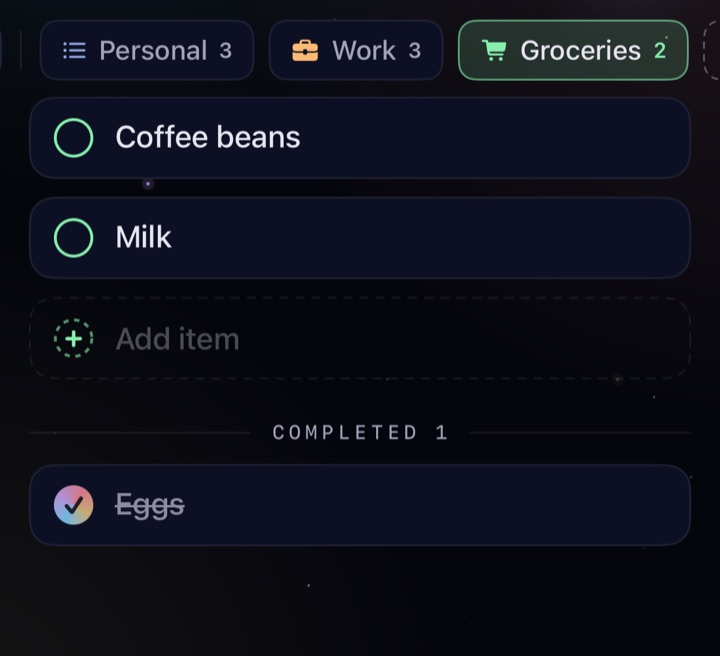
Lists with their own color and icon. A checklist is for plain items: type, press Return, type the next. Press and hold a list to edit it.
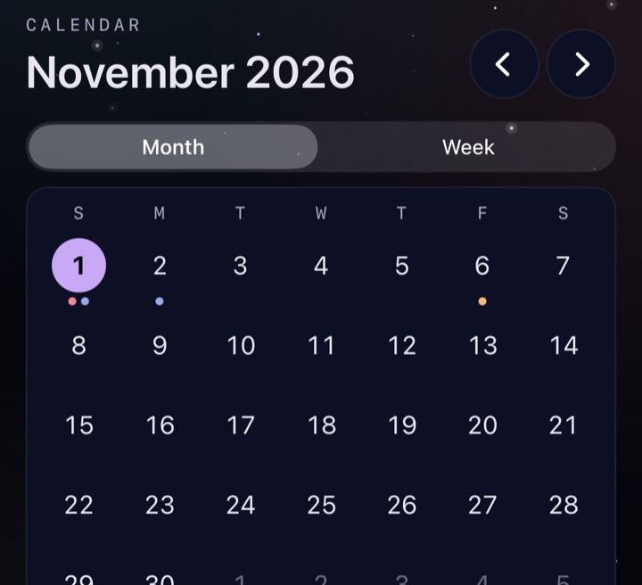
Month and week views; drag a task to another day. Your calendar events can show alongside. Search covers notes and the Archive too.
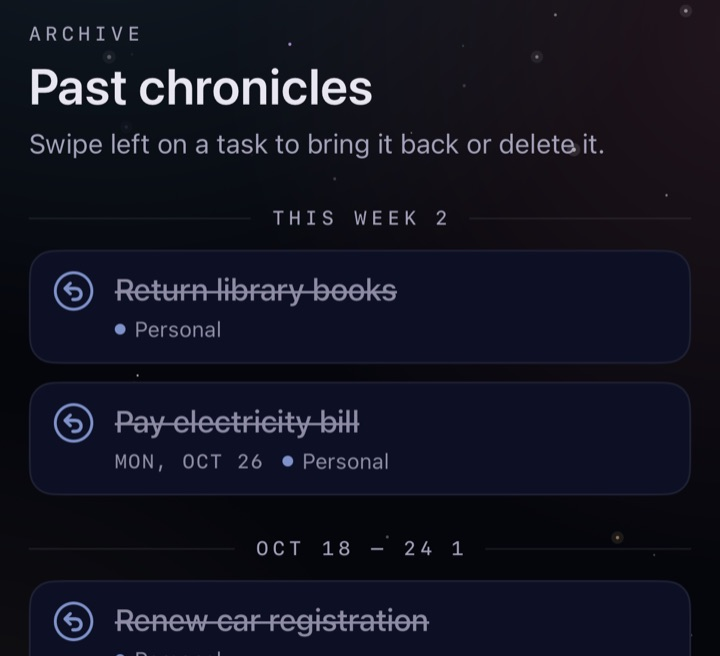
Finished tasks move here on their own, grouped by week. Restore anything with a swipe. Deleting for good only happens here.
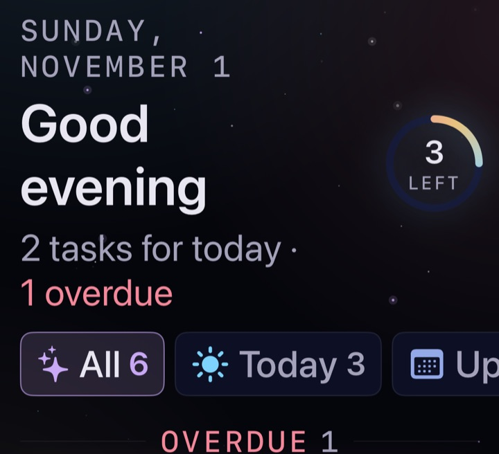
Works at every text size, in landscape and with VoiceOver. A Today widget for the Home Screen and Lock Screen.
Write the task in plain words. Chips under the title show what Comet ToDo understood; tap one to keep those words as text instead.
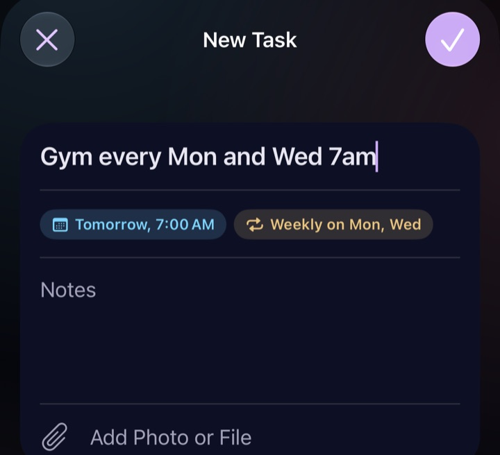
| You type | You get |
|---|---|
| Call mom Friday 6pm | Friday, 6:00 PM |
| Water plants every other day | Every 2 days |
| Renew passport !urgent | Urgent |
| Dentist Tuesday 9am alarm | Tuesday, 9:00 AMAlarm |
| Send invoice #Work | Work list |
Open it and today is right there: what's overdue, what's due, and a ring showing how much is left.
A swipe archives instead of deleting, and the Archive works like a Trash you can restore from.
One "this matters" marker (Urgent), not flags plus priorities plus stars.
No account, no servers, no tracking. Your tasks stay on your device.
Quick add reads dates as you type, and it always shows what it understood before anything changes.
Your tasks stay put when you update.
No account, no sign-in, no servers and no analytics. Your tasks, notes and attachments stay on your device. Quick add and attachment suggestions use Apple's on-device model, so nothing you write or attach is sent anywhere. Calendar access is optional and only used to show your events next to your tasks.
Most of this came from the first friends trying the app. Thank you!